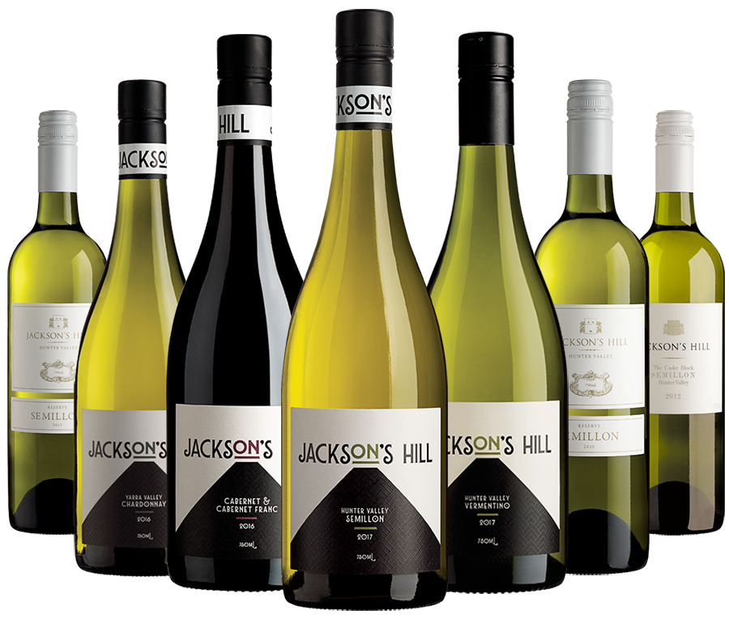

Magnificant Wines
View winesJackson’s Hill wines reflect their varietal appeal but further, they embody elements of interest – complexity and nuances that create an extra layer.
Stunning Location
Sitting atop a hill sporting spectacular views, Jackson’s Hill vineyard is one of the highest in the Hunter and is fairly unique in terms of the soil profile…
View galleryExcellent, full-bodied Chardonnay with a rich & creamy palate. Enjoyed it with pork belly and again by itself. Delicious

Nicole Gow
Wine Show Judge